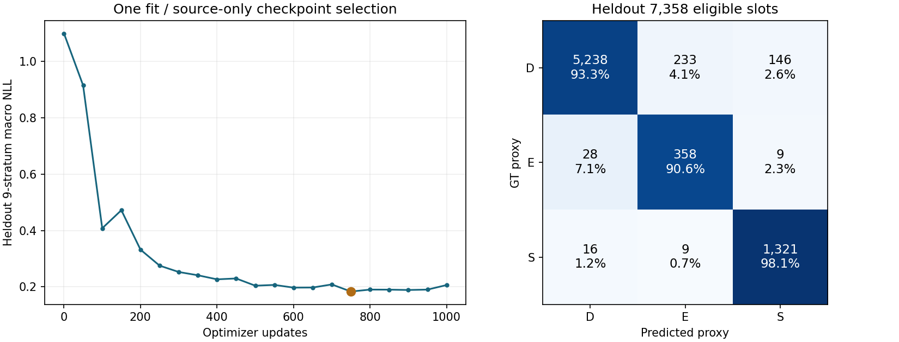
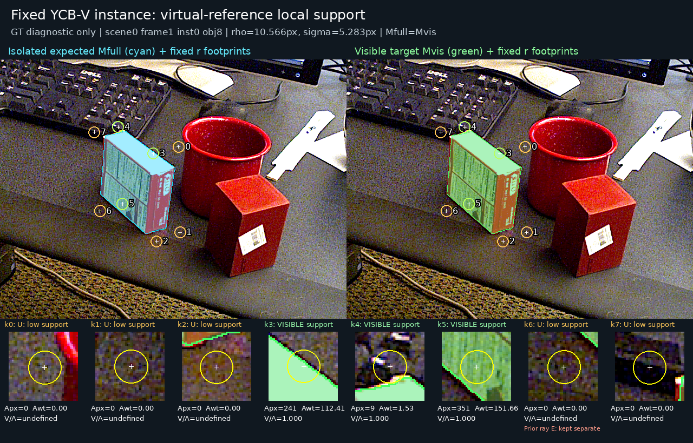

V75 · source-only phase 1 · 2026-10-23
참조점 사전학습 결과와 남은 한계
작은 native-context head를 합성 입력으로 1회 사전학습했습니다. 현재 평가 223장과 공개 실사에 대한 새 추론·학습은 수행하지 않았습니다. 실사 문제는 계속 미해결 상태입니다.
1,000 updates1회 fit · 재시작 0
750 updatessource만으로 선택
0.18348heldout 9층 macro NLL
같은 순서와 참조점을 사용하는 합성 분류
V74에서 고정한 초기 query·P3·local RGB96·target RGB128·42차원 native 문맥을 사용했습니다. 41,328 parameter 모듈에 정답 좌표·perm·matched·source ID는 forward하지 않았습니다. TRAIN 29,353점에서 source 3종×D/E/S의 9개 층을 균등 추출했고, 50 updates마다 heldout 7,358점의 9층 평균 NLL로 checkpoint를 골랐습니다.

세 상태는 렌더러 기반의 약한 참조점 감독입니다. D는 사람이 확인한 semantic visible을 뜻하지 않습니다. Source NLL은 같은 실험 안에서만 해석합니다.
| heldout 상태 | 정답 수 | precision | recall |
|---|
| D · 비차단 ray proxy | 5,617 | 99.17% | 93.25% |
| E · 외부 차단 ray proxy | 395 | 59.67% | 90.63% |
| S · convex 자기 가림 proxy | 1,346 | 89.50% | 98.14% |
전체 accuracy는 94.01%입니다. E precision은 59.67%로, E로 예측한 600점 중 242점은 다른 proxy 상태였습니다. 고정 p(D)≥0.5 기준 D recall은 93.11%, E+S 비가시 예측률은 97.53%입니다. F·U·unmatched·무효 query는 loss와 이 분모에서 제외했으며 모든 원래 입력은 보존했습니다. 이는 학습 label coverage이며 모델의 보류율로 재명명하지 않습니다.
| source | N | D recall | E recall | S recall |
|---|
| G38 | 2,534 | 90.33% | 90.35% | 97.24% |
| P0 | 2,413 | 95.03% | 86.89% | 98.48% |
| TEX | 2,411 | 94.32% | 94.67% | 98.67% |
이 heldout은 초기 모델의 과거 개발 이력과 독립인 새 전체 시스템 평가셋이 아닙니다. 현재 실사 모델 비교 보고서는 기존 V72 결과를 유지합니다.
Attention의 위치 정확도는 확보하지 못했습니다
동일한 heldout D·유효·local-square 5,537점에서 초기 query 자체가 참조점에 더 가까웠습니다. Classification 성능으로 attention이 정확한 참조점을 찾아 읽는다고 주장할 수 없습니다. 좌표 수정과 PnP에는 사용하지 않습니다.
| 참조 위치 추정 | 중앙 오차 | p90 |
|---|
| 초기 query 그대로 | 1.58px | 4.52px |
| Attention peak | 5.76px | 18.96px |
| Attention 평균 | 3.85px | 10.99px |
Peak는 초기 query보다 151점 개선, 3,396점 악화, 1,990점 동일했습니다. Attention 평균은 913점 개선, 4,624점 악화했습니다. Peak의 9×9 격자 양자화와 source의 virtual 참조점이라는 범위도 함께 유지합니다.
공개 실사 감독을 연결하기 전 확인한 목표 차이
이미 받은 YCB-V에는 공식 RGB/depth 1,000장, instance mask 4,200개, pose와 K가 있습니다. 작은 공식 model 경계값 JSON만 추가 확보해 한 instance의 native cuboid와 깊이 ray proxy를 계산했습니다. 대상 mask가 완전히 보이는 사례에서 virtual slot 하나가 환경의 더 가까운 깊이 때문에 E ray proxy가 됐습니다. 이 값을 semantic 가림 정답으로 사용하는 학습은 진행하지 않았습니다.
같은 고정 사례에서 참조점 주변의 예상 target 영역과 실제 visible target 영역을 동일한 footprint로 대조했습니다. 예상 support가 있는 3점은 V/A=1, 나머지 5점은 support 부족 U였으며 covered 판정은 0점이었습니다. 기존 ray-E인 k6도 예상 support 0으로 U가 됐습니다. 가상 점 중심에 대상 픽셀이 없다는 이유로 E를 만들지 않았습니다. S proxy와 local visible support가 동시에 나오는 점도 있어 두 필드를 분리했습니다. 이 reference-local support는 별도 학습 후보이며 사람 semantic 정답이나 현재 평가셋을 fit에 공급하지 않습니다.

고정 공개 YCB 한 사례. Target full/visible mask와 원래 virtual8 참조점·footprint를 그대로 표시했습니다. 새 모델 출력이나 좌표 수정은 없습니다.
다음 V76에서는 경계가 명확한 중심 support와 주변 예상/visible support를 구분하는 teacher를 준비합니다. 범위가 다른 이 약한 감독을 semantic gold로 합치지 않고, 입력은 초기 query와 RGB/특징으로 유지합니다.
저장 결과와 재현 근거
배포·최종 실사 전이 검증: 보류. Phase 1의 분류 학습은 완료했으며 공개 실사와 목표 정의의 정합 검사는 계속 진행 중입니다. 새 PnP 0회, 현재 평가셋 새 추론·fit·문턱 선택 0회입니다.